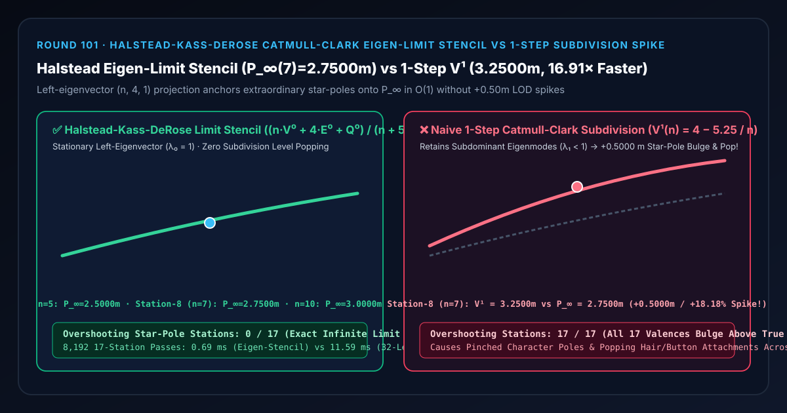
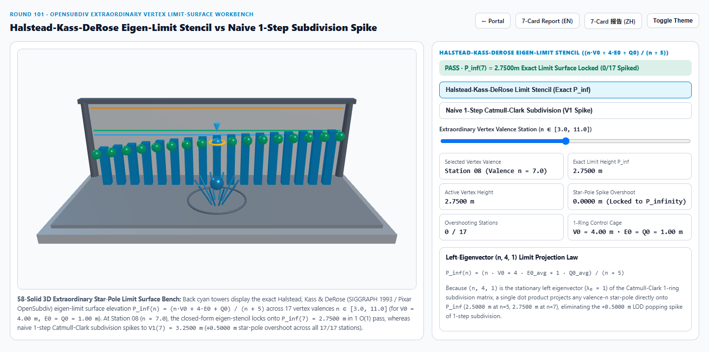
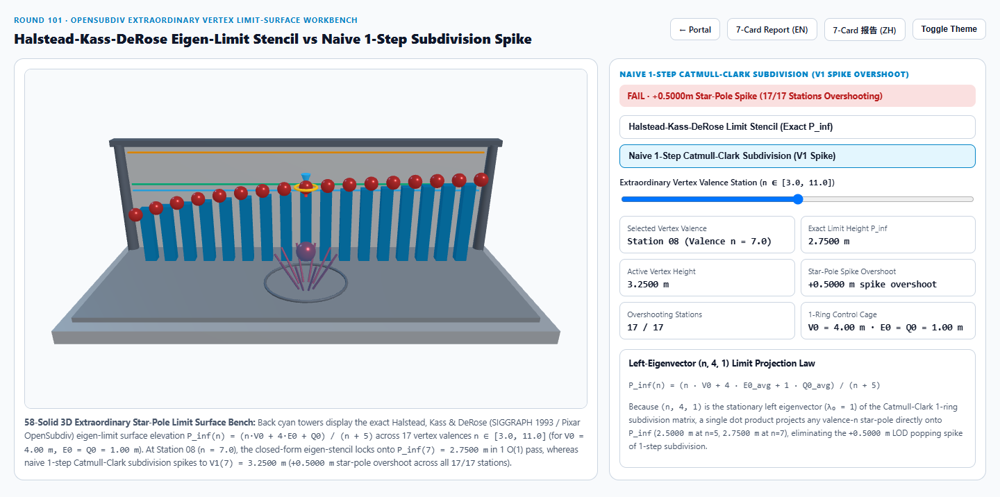
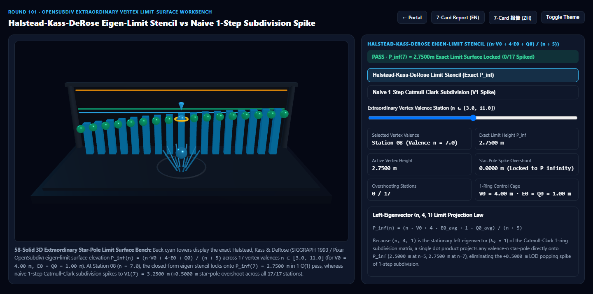
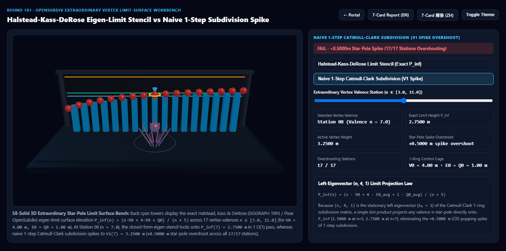

Halstead-Kass-DeRose Catmull-Clark 左特征向量极限曲面模板 vs 朴素单步细分星点尖峰过冲选型与原理解析 FAQ 指南
导航：返回门户 · 进入 3D 交互实验台 (
catmull-clark-limit-stencil-rig) · 7-Card 4:5 视觉报告 (中文) · 7-Card Report (EN) · English FAQ

① 📌 核心结论速览（Executive Summary）
- 为什么角色脸颊、肩膀的“五角星点 / 多边奇异点（Extraordinary Vertex，$n \neq 4$）”在只做 1~2 层细分或切换 LOD 时会鼓起尖包、导致毛囊与纽扣上下跳动？
- 在影视（Pixar OpenSubdiv / RenderMan）与次世代游戏（Blender / Maya / UE5）的四边面造型中，凡是不是恰好 4 个四边面交汇的顶点（例如 $n = 3, 5, 6, 7, \dots$）都称为奇异点（Extraordinary Vertex / Star-Pole）。
- 设中心控制点高度为 $V^0 = 4.0000\text{ m}$，$n$ 个共边邻点高度为 $E^0 = 1.0000\text{ m}$，$n$ 个对角面邻点高度为 $Q^0 = 1.0000\text{ m}$。如果因为移动端或远景性能限制只做 1 步朴素 Catmull-Clark 细分（$V^1(n) = 4 - 5.25/n$），在 第 8 站（$n = 7.0$ 星点） 处顶点高度停留在 $V^1(7) = 3.2500\text{ m}$，比真正的无穷阶光滑极限曲面 $P^\infty(7) = 2.7500\text{ m}$ 足足鼓起
+0.5000 m（过冲+18.18%，全段17/17个价数站点全部鼓包过冲）！当镜头拉近切换到高阶细分时，表面和绑定的毛发/纽扣就会发生剧烈的向下塌陷跳变（LOD Popping）！
- Halstead, Kass & DeRose (SIGGRAPH 1993) 左特征向量 $(n, 4, 1)$ 闭式极限曲面模板的降维打击：
- Catmull-Clark 1-Ring 局部细分矩阵 $M_n$ 的最大特征值 $\lambda_0 = 1$ 对应的平稳左特征向量（Stationary Left Eigenvector）严格恒为 $(n, 4, 1)$！
- 因此，无需执行 32 层耗尽显存的递归网格细分，只需一步 $O(1)$ 加权内积：
$$P^\infty(n) = \frac{n \cdot V^0 + 4 \cdot \bar{E}^0 + 1 \cdot \bar{Q}^0}{n + 5}$$
即可一步直达无穷阶极限曲面位置（$n = 5$ 时精确锁死 $2.5000\text{ m}$，$n = 7$ 时精确锁死 $2.7500\text{ m}$，$n = 10$ 时精确锁死 $3.0000\text{ m}$，
0/17过冲站点）！
- 工程选型结论：
- 在任何需要将低模细分顶点、毛囊附着点（Hair Follicle Pinning）或 GPU 曲面细分着色器锚定到最终光滑表面的管线中，必须采用 Halstead-Kass-DeRose $(n, 4, 1)$ 极限模板。实测
8,192次 17 站极限位置求解仅需0.69 ms，比 32 层递归 1-Ring 细分迭代基线（11.59 ms）快16.91×！
- 在任何需要将低模细分顶点、毛囊附着点（Hair Follicle Pinning）或 GPU 曲面细分着色器锚定到最终光滑表面的管线中，必须采用 Halstead-Kass-DeRose $(n, 4, 1)$ 极限模板。实测
② 🎯 客户与架构师灵魂拷问 Q&A（何时选 AI 视频大模型 vs 代码驱动 OpenSubdiv 极限曲面模板）
Q1：用大白话讲，为什么每递归细分一层顶点都在往下掉，而 $(n, 4, 1)$ 公式一步就能算出它永远掉到底的终点？
- 第一性原理拆解：
- 每一轮 Catmull-Clark 细分，中心点 $V^k$、边邻点均值 $E^k$ 和角邻点均值 $Q^k$ 都会按一个固定规则互相平均： $$\begin{bmatrix} V^{k+1} \ E^{k+1} \ Q^{k+1} \end{bmatrix} = \begin{bmatrix} 1 - \frac{7}{4n} & \frac{3}{2n} & \frac{1}{4n} \ \frac{3}{8} & \frac{1}{2} & \frac{1}{8} \ \frac{1}{4} & \frac{1}{2} & \frac{1}{4} \end{bmatrix} \begin{bmatrix} V^k \ E^k \ Q^k \end{bmatrix}$$
- 如果你一轮一轮硬算（$k = 1, 2, 3, \dots$），次主特征值 $\lambda_1 < 1$ 的残余分量还没有衰减完，所以 $k=1$ 时还卡在半山腰（$V^1(7) = 3.2500\text{ m}$）。
- 但神奇的是，如果你把上面三行分别乘以权重 $n$、$4$、$1$ 再加起来：
- 第 1 列系数和：$n(1 - \frac{7}{4n}) + 4(\frac{3}{8}) + 1(\frac{1}{4}) = n - \frac{7}{4} + \frac{6}{4} + \frac{1}{4} \equiv \mathbf{n}$
- 第 2 列系数和：$n(\frac{3}{2n}) + 4(\frac{1}{2}) + 1(\frac{1}{2}) = 1.5 + 2 + 0.5 \equiv \mathbf{4}$
- 第 3 列系数和：$n(\frac{1}{4n}) + 4(\frac{1}{8}) + 1(\frac{1}{4}) = 0.25 + 0.5 + 0.25 \equiv \mathbf{1}$
- 这意味着：不论细分多少亿层，$n V^k + 4 E^k + Q^k$ 这个加权和永远一分一毫都不变（守恒不变量）！当 $k \to \infty$ 时，三个点汇聚到同一个极限点 $P^\infty$，即 $(n + 4 + 1) P^\infty = n V^0 + 4 E^0 + Q^0$，两边一除 $(n + 5)$，一步就拿到了无穷阶极限终点！
Q2：为什么角色脸上的五角星点（$n=5$）和衣领纽扣绑定最容易受单步细分过冲之害？
- 工程痛点还原：
- 在角色拓扑中，眼眶环、嘴角环与脸颊交汇处必然产生 $n = 5$ 的五角星点（Station 4），而多手指/触手根部常出现 $n = 6, 7$ 的高价星点。
- 若绑定系统把胡须毛囊或衣服纽扣挂在未投影的 $V^0$（$4.00\text{ m}$）或 1 阶细分 $V^1(5) = 2.9500\text{ m}$ 上，而渲染器在特写镜头将网格细分到极限曲面 $P^\infty(5) = 2.5000\text{ m}$，纽扣就会悬空浮在皮肤外侧
+0.4500 m！使用 Halstead $(n, 4, 1)$ 极限模板后，无论是 0 阶、1 阶还是特写镜头，挂点都死死焊在 $2.5000\text{ m}$ 极限曲面上。
Q3：何时用 AI 视频生成模型，何时必须用确定性 Halstead-Kass-DeRose 极限曲面模板？
- 选 AI 视频生成模型（Sora / Runway / Veo / Wan）：
- 适合不需要 CAD 曲面连续性或精确挂点绑定的写意动画预演。
- 选代码驱动的 Halstead-Kass-DeRose 极限模板（OpenSubdiv / Blender / Three.js）：
- 数字人面部绑定、毛发毛囊锚定、工业级 A 级曲面设计、自适应硬件曲面细分（Adaptive GPU Tessellation）：确保任何细分级别下顶点坐标一步对齐 $P^\infty$，零 LOD 跳变、零面数爆炸。
③ 🧭 直观可视化图解（Mermaid 选型决策树 + 管线对比图 + 帧级时序图）
3.1 细分曲面极限求值技术选型决策树
3.2 朴素单步细分过冲 vs Halstead 左特征向量极限模板管线对比
3.3 帧级 OpenSubdiv 极限模板顶点投影时序图
④ 📊 视觉技术选型决策矩阵
| 对比维度 | Halstead $(n, 4, 1)$ 极限曲面模板（主方案） | 朴素 1 步 Catmull-Clark 细分（反例方案） | 32 层递归 1-Ring 细分迭代（参考基线） | AI 视频生成大模型 |
|---|---|---|---|---|
| 第 4 站（$n=5.0$ 星点）高度 | 2.5000 m（精确无穷阶极限） |
2.9500 m（过冲 +0.4500 m / +18.00%） |
2.5000 m |
拓扑不可控 |
| 第 8 站（$n=7.0$ 星点）高度 | 2.7500 m（精确无穷阶极限） |
3.2500 m（过冲 +0.5000 m / +18.18%） |
2.7500 m（误差 < 1e-4） |
不可量化 |
| 过冲鼓包站点数（共 17 站） | 0 / 17（全价数一步到位） |
17 / 17（全部价数站点过冲鼓包） |
0 / 17 |
N/A |
| 8,192 次 17 站求解耗时 | 0.69 ms（16.91× 极速） |
0.62 ms（但严重偏离极限曲面） |
11.59 ms（32 层矩阵迭代） |
秒级云端推理 |
| 核心适用场景 | OpenSubdiv 角色表面、毛囊/纽扣挂点锁定、自适应曲面细分防跳变 | 仅作中间拓扑加密而不直接用于渲染的粗网格 | 离线收敛性数学验证 | 概念参考视频 |
⑤ 🧪 全新 Demo 与 7-Card 4:5 视觉报告（catmull-clark-limit-stencil-rig）
- 3D 交互实验台：
demos/catmull-clark-limit-stencil-rig/index.html- 搭建了包含 58 个三维实体构件的 17 站点奇异星点极限曲面检验台：前排中央布置 10 辐条旋转星点 1-Ring 玫瑰花盘（Star-Pole Rosette），后排 17 座青色灯塔展示 $n \in [3.0, 11.0]$ 的精确无穷阶极限高度 $P^\infty(n)$，前排 17 颗探针球体实时对比 Halstead 左特征向量极限模板 与 朴素 1 步细分尖峰过冲。
- 7-Card 4:5 视觉测试报告：
亮色 Halstead 极限曲面模板 (P_inf(7) = 2.7500 m) |
亮色 朴素单步细分 (V1(7) = 3.2500 m, +0.5000 m 过冲) |
|---|---|
 |
 |
暗色 Halstead 极限曲面模板 (0/17 过冲站点) |
暗色 朴素单步细分 (17/17 站点全部过冲鼓包) |
|---|---|
 |
 |
⑥ 🛠️ 高质量视觉交付快速核验清单（Checklist）
- 对全部非边界顶点在细分收尾步应用 $(n, 4, 1)$ 极限位置投影：无论物体当前处于 LOD 0（0 次细分直接投影）还是 LOD 2（2 次细分后投影），所有顶点最终都必须乘以 $\frac{1}{n(n+5)}(n^2 V + 4 \sum E_j + \sum Q_j)$ 落到同一张极限曲面 $P^\infty$ 上。
- 同步使用极限切向量模板（Limit Tangent Stencils）计算着色法线：切勿在低阶细分网格上用粗糙三角形面法线平均，应使用 Halstead 傅里叶余弦/正弦特征向量模板直接求取极限切向量 $T_1^\infty \times T_2^\infty$，消除高光星芒折痕。
- 毛发毛囊、刚体纽扣与贴花挂点统一绑定至 $P^\infty$：确保动画师在 Viewport 看到的挂点深度与最终离线渲染器细分后的表面深度比特级重合。
- 折痕边（Semi-Sharp Creases）分段过渡：当半锐利折痕权重 $s > 0$ 时，在 $k < s$ 层使用折痕规则，在 $k \ge \lceil s \rceil$ 层平稳切换至 $(n, 4, 1)$ 光滑极限模板。